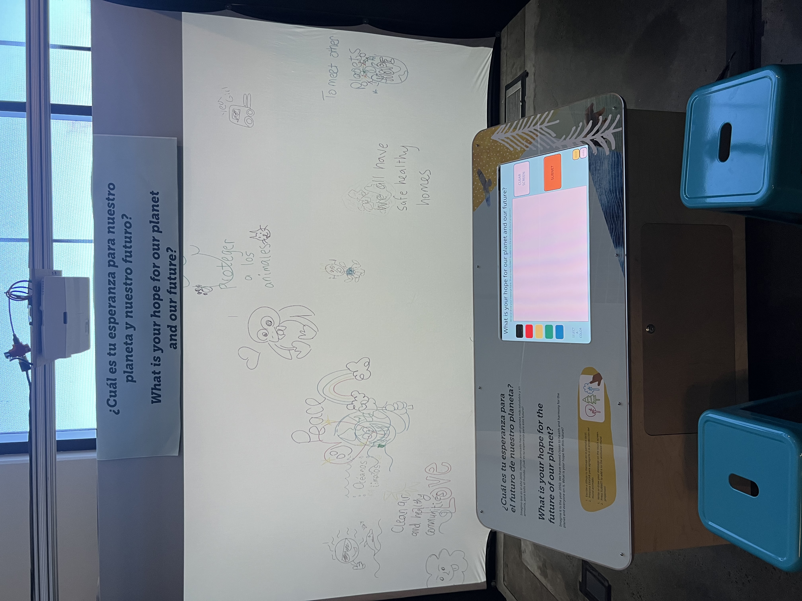

imagining the future is an interactive exhibit for visitors to draw or write something and have it float around with other projected submissions from visitors. the prompt of the exhibit was "What is your hope for our planet and our future?" but the submissions were uncensored (though monitored, as it was on display in a children's museum).

using processing, i created two separate sketches. the first was the completely custom drawing program and the second was the projection sketch. with an experimental sketch from torb-no's github (credited in the code), i was able to encode and send the image submitted from the custom drawing sketch (the client), then recieve and decode the image to be displayed in the projecting sketch (the server). the sketch is also able to switch between spanish and english at anytime to welcome more visitors.
the submitted drawings were saved to and pulled from a google drive folder to be able to monitor the submissions.